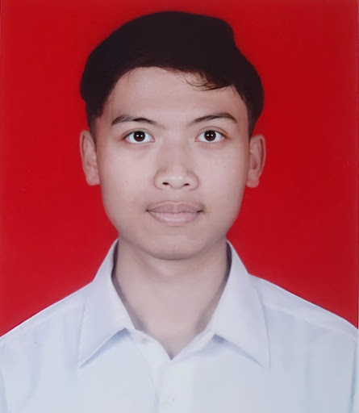

Lulusan TKJ yang ahli dalam pengoperasian mesin cetak digital skala industri dan manajemen lapangan. Menjamin kualitas produksi terbaik dengan presisi tinggi.

Total Pengalaman
3+ Tahun
Riwayat Pekerjaan
Kingtech Digital Printing - Genteng
Bertanggung jawab penuh atas alur produksi cetak digital menggunakan berbagai teknologi mesin canggih:
MANDIRI - BANYUWANGI
Manajemen perawatan tanaman dari bibit hingga panen, pengendalian hama, serta pemasaran produk pupuk organik ke masyarakat lokal.
BILQIS KOMPUTER
Melakukan diagnosa dan perbaikan pada perangkat keras komputer serta printer untuk klien perorangan dan instansi.
PRINTING
Fuji Xerox & Epson
CUTTING
Rhinotec Series
IT SUPPORT
Hardware PC/TKJ
MULTIMEDIA
Photo & Video Editing